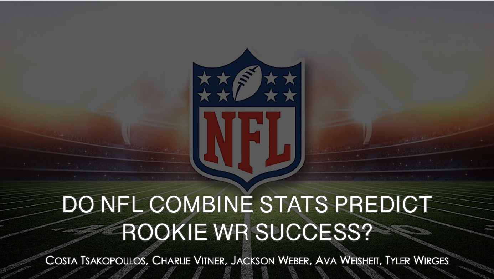
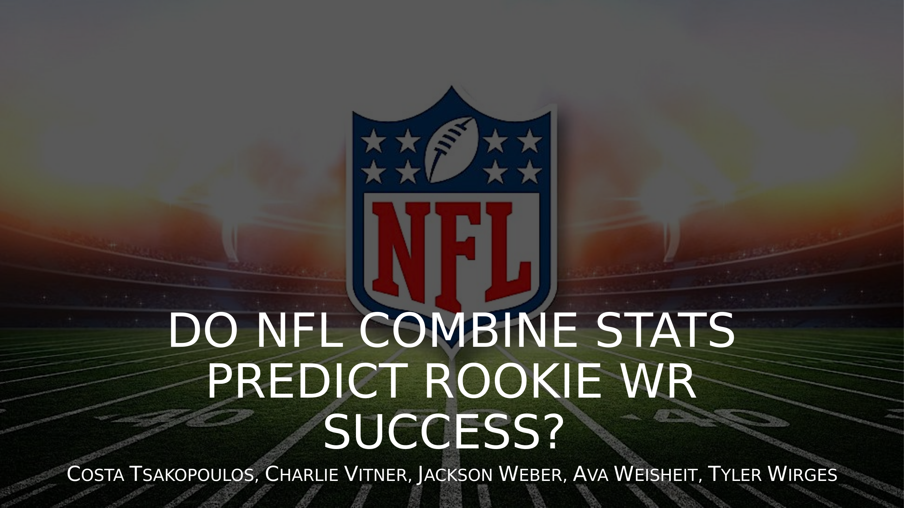

Overview
Every spring, the NFL Combine gets treated as a preview of who's going to succeed at the next level - 40-yard dash times, vertical jumps, and shuttle drills all get read as signs of future production, especially for wide receivers. For my Sport Analytics final project, my team and I set out to actually test that assumption with data instead of taking it at face value.
We pulled three seasons of NFL Draft Combine data (2023-2025) from Pro-Football-Reference and matched each player to their rookie-season statistics, building a composite performance score (points per reception, per yard, and per touchdown) as our target variable. From there, we ran correlation analysis and a series of multiple regression models to isolate which factors actually predicted rookie WR success.
My role
I took a leadership role on this project, organizing the team and keeping everyone on track. I delegated tasks and built out a schedule so we all stayed on time, checked in regularly with my teammates, and made sure everyone felt confident and prepared on the specific parts of the analysis they were presenting. I also taught one of my teammates linear regression and multiple linear regression as concepts from the ground up - explaining it helped sharpen my own understanding of the material, and it was genuinely rewarding to watch him present those concepts confidently and clearly by the end.
Key findings
Combine metrics alone turned out to be poor predictors of rookie performance - once draft pick was removed from the model, combine stats explained almost none of the variance (R² = 0.048). Draft pick position was by far the strongest predictor in our dataset, explaining about 27% of rookie WR variance (R² = 0.279), with every spot earlier in the draft associated with roughly a 0.568-point increase in rookie score. Even so, 73% of rookie WR performance remained unexplained by anything in our dataset, pointing to factors like scheme fit, coaching, and football IQ mattering more than raw measurables.
Based on those findings, we recommended that coaches focus on personalized development plans rather than assuming Combine athleticism predicts readiness, that front offices weigh Combine metrics as a supplement to scouting rather than a primary signal, and that Combine results are most useful for evaluating later-round and undrafted talent, where less scouting information is otherwise available.
What the course covered
The final project was the capstone of a semester that built up statistical concepts week by week: starting with variables and measurement scales, moving into probability and how to interpret events versus randomness, then statistical uncertainty and what it means to quantify error in a conclusion. From there the course moved into correlation, simple linear regression, and finally multiple regression - the exact toolkit our team used to analyze the Combine data and build our models.
Skills demonstrated
Leadership Team Management Multiple Regression Correlation Analysis Data Cleaning Public Speaking